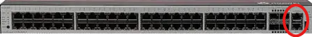
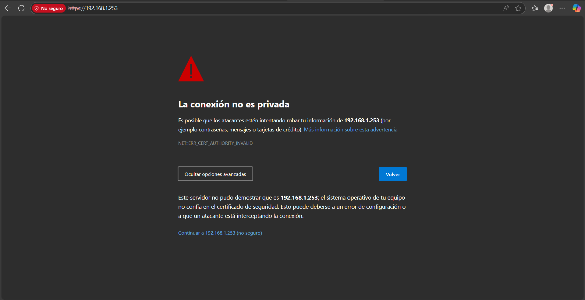
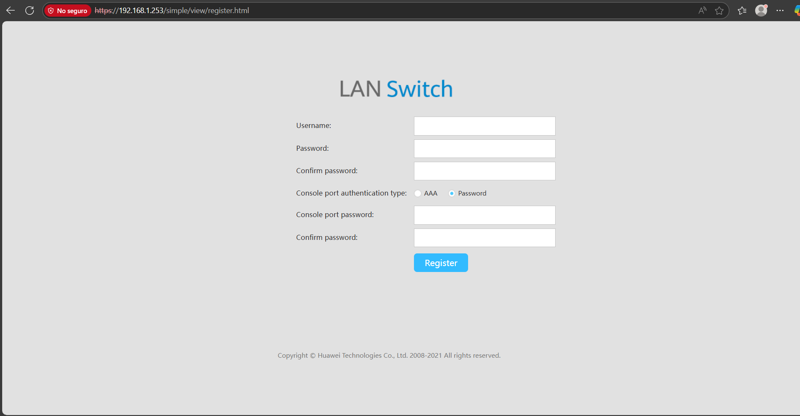
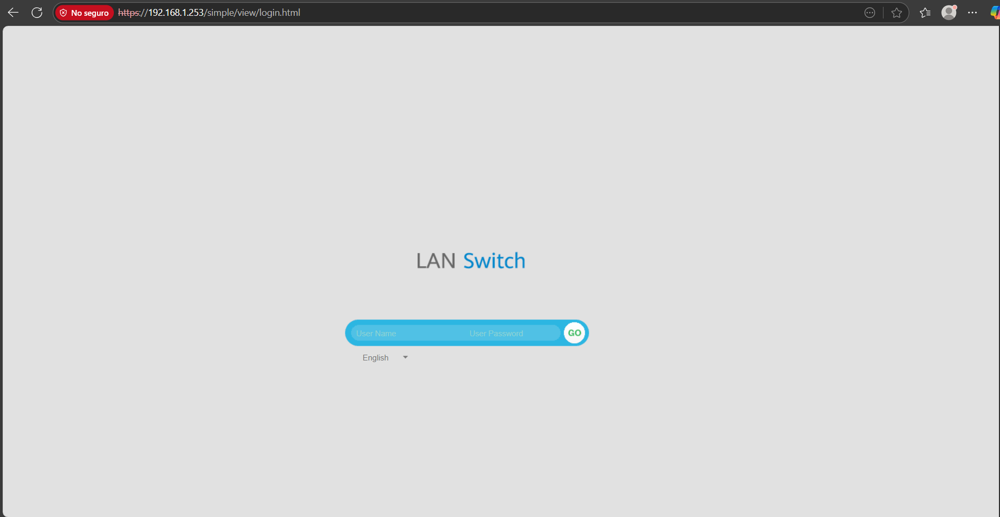

Conexion y acceso al Switch
Para poder acceder al Switch debemos conectar el cable de red al puerto que dice ETH que se encuentra en el frente del Switch

Una vez conectado el cable, debemos asignarle una ip a la pc del rango 192.168.1.2- 192.168.1.200, luego ingresamos desde el navegador a la ip 192.168.1.253, algunos switches pueden usar la ip 192.168.1.1
Una vez ingresada la ip en el navegador aparecera una pagina que indica que la conexion no es privada, le tenes que dar a opciones avanzadas y darle a Continuar a 192.168.1.253 (no es seguro)

Una vez ingresado a la pagina te aparecera una pantalla para crear el usuario de administrador del switch, el mismo te solicitara el nombre del usuario la contraseña confirmar la contraseña, y la contraseña para acceder desde la consola. Luego le damos a Registrar.

Luego nos pedira que ingresemos el usuario y la contraseña creada anteriormente.

Una vez ingresado al sw ya podemos comenzar con la configuracion incial.